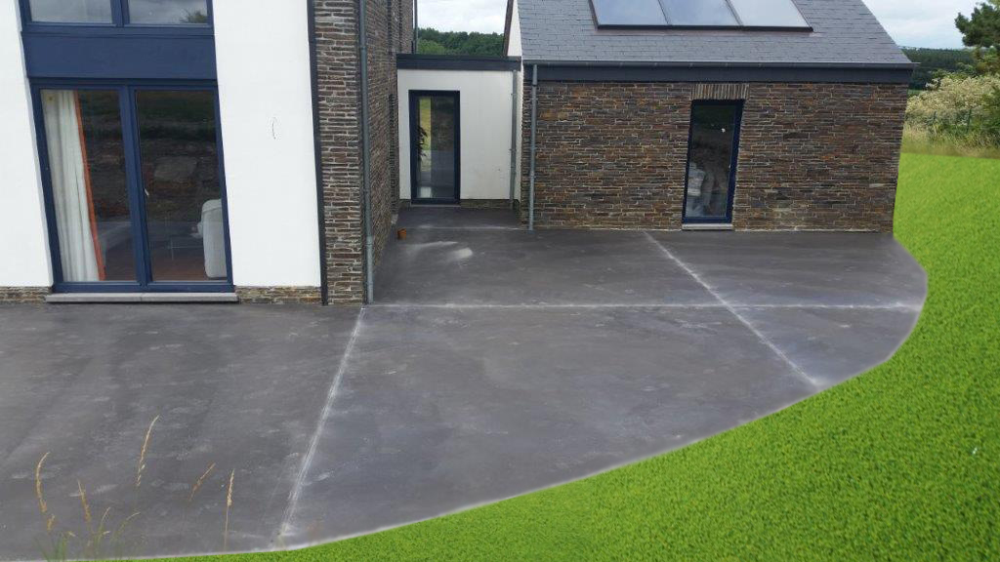

Lissé
Béton lissé
La finition la plus prisée. Surface continue, lisse et homogène, sans joints visibles. Travaillée à la talocheuse mécanique pour une régularité parfaite. Convient à l'intérieur comme à l'extérieur.
- Finition mate ou satinée
- Plus de 30 teintes au choix
- Sans joints visibles
- Intérieur & extérieur